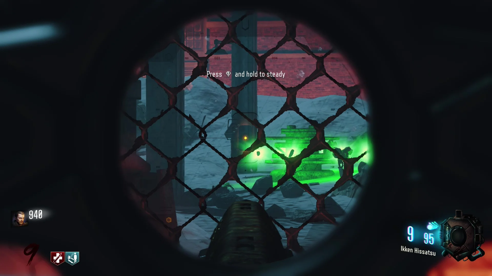
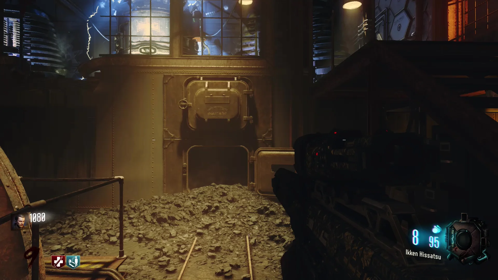
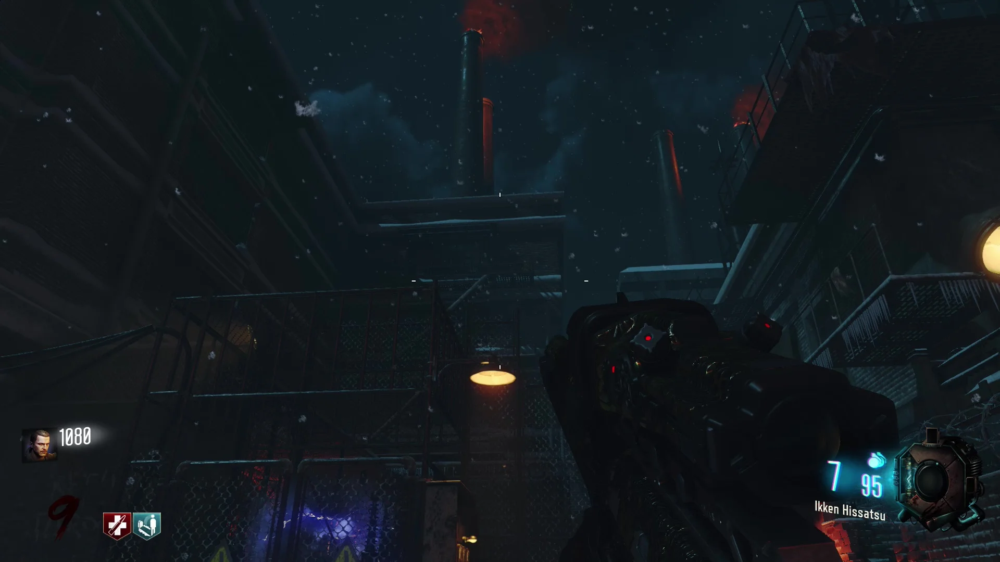
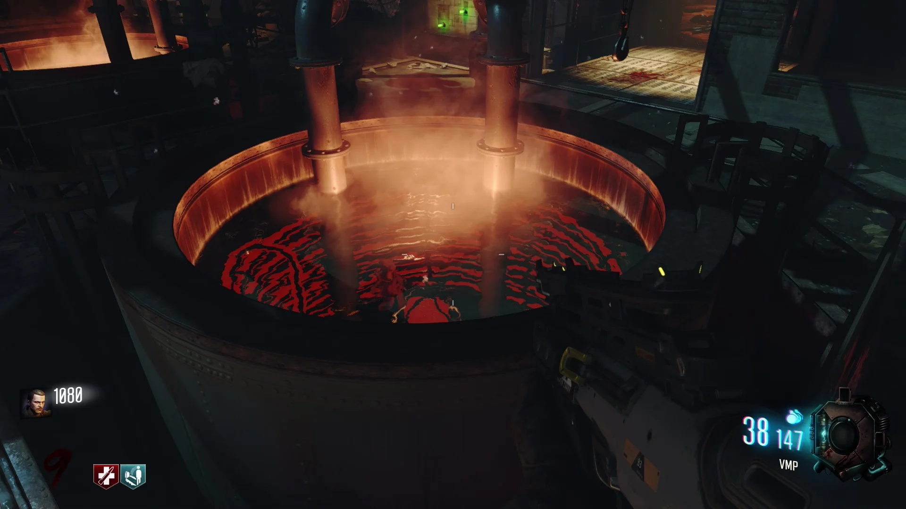
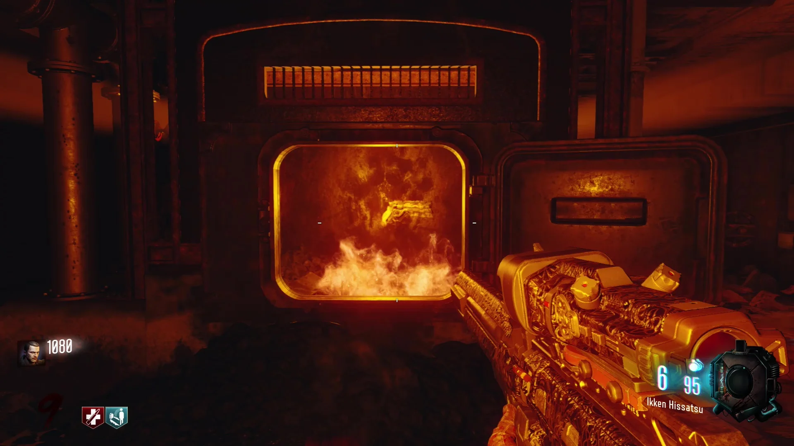

Requisitos: Tener el Pack-A-Punch y un arma mejorada.
Buscar los 4 osos y dispararles con armas mejoradas
Cuando tengamos el arma mejorada nos dirigiremos a la derecha del Pack-A-Punch, y en la zona de fuera dispararemos al oso que está al lado de la columna.

Para el siguiente nos dirigiremos al teleporter de la derecha del Pack-A-Punch, y en la zona de debajo dispararemos al oso que está dentro de la compuerta abierta.

Para el siguiente nos dirigiremos al teleporter enfrente del Pack-A-Punch, y en la zona de fuera dispararemos al oso que está en el balcón del edificio.

Para el último nos dirigiremos al teleporter a la izquierda del Pack-A-Punch, y en el agujero de la izquierda dispararemos saltando al oso que está en el interior.

Cada vez que disparemos a uno se oirá un sonido de confirmación. Por ultimo, vamos debajo de la zona del último oso, podremos recoger el arma especial y el Easter Egg estará completado.
